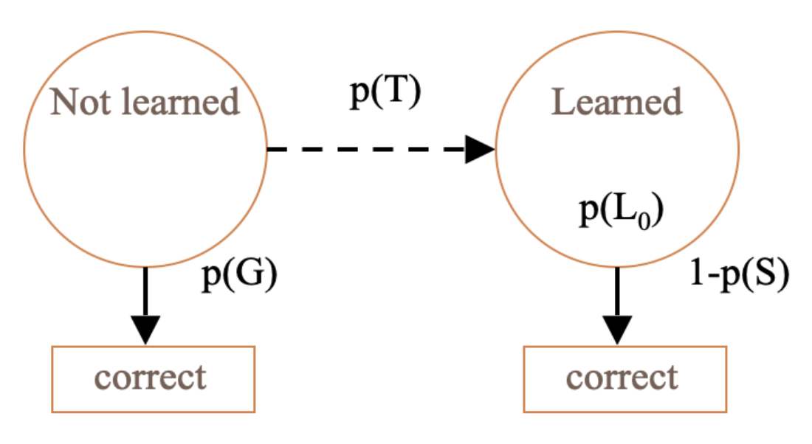
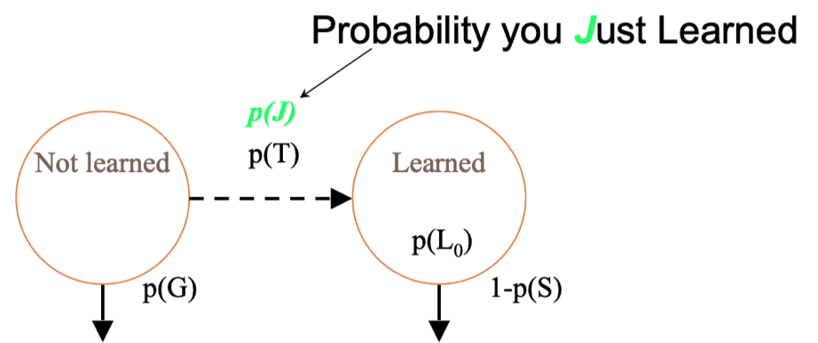
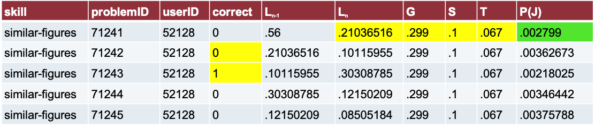

Module 1: Bayesian Knowledge Tracing
KT Learning Lab 1: A Conceptual Overview
A Little History
The classic approach for measuring tightly defined skills in online learning
First proposed by Richard Atkinson
Most thoroughly articulated and studied by Albert Corbett and John Anderson Corbett and Anderson (1995)
Flexibility of BKT
Been around a long time
Still as of today the most widely-used knowledge tracing algorithm used at scale
Interpretable
Predictable
Decent performance
Goal & Assumptions
The Key Goal of BKT
Measuring how well a student knows a specific skill/knowledge component at a specific time
Based on their past history of performance with that skill/KC
What is the typical use of BKT?
- Assess a student’s knowledge of skill/KC X
Based on a sequence of items that are scored between 0 and 1
- Classically 0 or 1, but there are variants that relax this
- Where each item corresponds to a single skill
- Where the student can learn on each item, due to help, feedback, scaffolding, etc.
Key assumptions of BKT
- Each item must involve a single latent trait or skill
- Different from PFA, which we’ll talk about next lecture
- Each skill has four parameters
Only the first attempt on each item matters
- i.e. is included in calculations
Help use usually treated as same as incorrect
- Some exceptions I will discuss later
Key assumptions of BKT Cont.
Each skill has four parameters
From these parameters, and the pattern of successes and failures the student has had on each relevant skill so far
We can compute
Latent knowledge P(Ln)
The probability P(CORR) that the learner will get the item correct
Key assumptions of BKT
- Two-state learning model
- Each skill is either learned or unlearned
In problem-solving, the student can learn a skill at each opportunity to apply the skill
Each problem (opportunity) has the same chance of learning.
- A student does not forget a skill, once he or she knows it
Model Performance Assumptions
- If the student knows a skill, there is still some chance the student will slip and make a mistake.
- If the student does not know a skill, there is still some chance the student will guess correctly.
The BKT Model
Model Parameters & Predicting Correctness
Learning Parameters
Two Learning Parameters
- p(L0). Probability the skill is already known before the first opportunity to use the skill in problem solving.
- p(T). Probability the skill will be learned at each opportunity to use the skill.

Learning Parameters
Two Learning Parameters
- p(L0). Probability the skill is already known before the first opportunity to use the skill in problem solving.
- p(T). Probability the skill will be learned at each opportunity to use the skill.
Performance Parameters
Two Performance Parameters
- p(G). Probability the student will guess correctly if the skill is not known.
- p(S). Probability the student will slip (make a mistake) if the skill is known.
Performance Parameters
Two Performance Parameters
- p(G). Probability the student will guess correctly if the skill is not known.
- p(S). Probability the student will slip (make a mistake) if the skill is known.
Comments? Questions?
Predicting Current Student Correctness
PCORR = P(Ln)P(S)+P(~Ln)P(G)
Bayesian Knowledge Tracing
Whenever the student has an opportunity to use a skill
The probability that the student knows the skill is updated
Using formulas derived from Bayes’ Theorem
Formulas
\[ P(L_{n-1}|Correct_{n}) = \frac{P(L_{n-1})*(1-P(S))}{P(L_{n-1})*(1-P(S))+(1-P(L_{n-1}))*P(G)} \\\\\\ P(L_{n-1}|Incorrect_{n}) = \frac{P(L_{n-1})*(P(S))}{P(L_{n-1})*(P(S))+(1-P(L_{n-1}))*(1-P(G))} \\\\\\ P(L_{n}|Action_{n}) = P(L_{n-1}|Action_{n}) +(1- P(L_{n-1}|Action_{n}) * p(T)) \]
Example
P(L0) = 0.4, P(T) = 0.1, P(S) = 0.3, P(G) = 0.2
| Actual | P(Ln-1) | P(Ln-1|actual) | P(Ln) |
|---|---|---|---|
| 0.4 | |||
Example
P(L0) = 0.4, P(T) = 0.1, P(S) = 0.3, P(G) = 0.2
| Actual | P(Ln-1) | P(Ln-1|actual) | P(Ln) |
|---|---|---|---|
| 0 | 0.4 | \[ \frac{(0.4)(0.3)}{(0.4)(0.3)+(0.6)(0.8)} \] | |
| . | |||
| . | |||
| . |
Example
P(L0) = 0.4, P(T) = 0.1, P(S) = 0.3, P(G) = 0.2
| Actual | P(Ln-1) | P(Ln-1|actual) | P(Ln) |
|---|---|---|---|
| 0 | 0.4 | \[ \frac{(0.12)}{(0.12)+(0.48)} \] | |
| . | |||
Example
P(L0) = 0.4, P(T) = 0.1, P(S) = 0.3, P(G) = 0.2
| Actual | P(Ln-1) | P(Ln-1|actual) | P(Ln) |
|---|---|---|---|
| 0 | 0.4 | 0.2 | |
Example
P(L0) = 0.4, P(T) = 0.1, P(S) = 0.3, P(G) = 0.2
| Actual | P(Ln-1) | P(Ln-1|actual) | P(Ln) |
|---|---|---|---|
| 0 | 0.4 | 0.2 | 0.2+(0.8)(0.1) |
Example
P(L0) = 0.4, P(T) = 0.1, P(S) = 0.3, P(G) = 0.2
| Actual | P(Ln-1) | P(Ln-1|actual) | P(Ln) |
|---|---|---|---|
| 0 | 0.4 | 0.2 | 0.28 |
Example
P(L0) = 0.4, P(T) = 0.1, P(S) = 0.3, P(G) = 0.2
| Actual | P(Ln-1) | P(Ln-1|actual) | P(Ln) |
|---|---|---|---|
| 0 | 0.4 | 0.2 | 0.28 |
| 0.28 | |||
Example
P(L0) = 0.4, P(T) = 0.1, P(S) = 0.3, P(G) = 0.2
| Actual | P(Ln-1) | P(Ln-1|actual) | P(Ln) |
|---|---|---|---|
| 0 | 0.4 | 0.2 | 0.28 |
| 1 | 0.28 | ||
Example
P(L0) = 0.4, P(T) = 0.1, P(S) = 0.3, P(G) = 0.2
| Actual | P(Ln-1) | P(Ln-1|actual) | P(Ln) |
|---|---|---|---|
| 0 | 0.4 | 0.2 | 0.28 |
| 1 | 0.28 | \[ \frac{(0.28)(0.7)}{(0.28)(0.7)+(0.72)(0.2)} \] | |
Example
P(L0) = 0.4, P(T) = 0.1, P(S) = 0.3, P(G) = 0.2
| Actual | P(Ln-1) | P(Ln-1|actual) | P(Ln) |
|---|---|---|---|
| 0 | 0.4 | 0.2 | 0.28 |
| 1 | 0.28 | \[ \frac{(0.196)}{(0.196)+(0.144)} \] | |
Example
P(L0) = 0.4, P(T) = 0.1, P(S) = 0.3, P(G) = 0.2
| Actual | P(Ln-1) | P(Ln-1|actual) | P(Ln) |
|---|---|---|---|
| 0 | 0.4 | 0.2 | 0.28 |
| 1 | 0.28 | 0.58 | |
Example
P(L0) = 0.4, P(T) = 0.1, P(S) = 0.3, P(G) = 0.2
| Actual | P(Ln-1) | P(Ln-1|actual) | P(Ln) |
|---|---|---|---|
| 0 | 0.4 | 0.2 | 0.28 |
| 1 | 0.28 | 0.58 | (0.58) + (0.42)(0.1) |
Example
P(L0) = 0.4, P(T) = 0.1, P(S) = 0.3, P(G) = 0.2
| Actual | P(Ln-1) | P(Ln-1|actual) | P(Ln) |
|---|---|---|---|
| 0 | 0.4 | 0.2 | 0.28 |
| 1 | 0.28 | 0.58 | 0.62 |
Your Turn
P(L0) = 0.4, P(T) = 0.1, P(S) = 0.3, P(G) = 0.2
| Actual | P(Ln-1) | P(Ln-1|actual) | P(Ln) |
|---|---|---|---|
| 0 | 0.4 | 0.2 | 0.28 |
| 1 | 0.28 | 0.58 | 0.62 |
| 1 |
Comments? Questions?
Conceptual Idea Behind Knowledge Tracing
Parameter Constraints
Typically, the potential values of BKT parameters are constrained
To avoid model degeneracy
Conceptual Idea Behind Knowledge Tracing
Knowing a skill generally leads to correct performance
Correct performance implies that a student knows the relevant skill
Hence, by looking at whether a student’s performance is correct, we can infer whether they know the skill
Essentially
- A knowledge model is degenerate when it violates this idea
- When knowing a skill leads to worse performance
- When getting a skill wrong means you know it
Parameter Constraints Proposed
Knowledge Tracing
How do we know if a knowledge tracing model is any good?
Our primary goal is to predict knowledge
Knowledge Tracing
How do we know if a knowledge tracing model is any good?
Our primary goal is to predict knowledge
- But knowledge is a latent trait
- So we instead check our knowledge predictions by checking how well the model predicts performance
Fitting a Knowledge-Tracing Model
In principle, any set of four parameters can be used by knowledge-tracing
But parameters that predict student performance better are preferred
Knowledge-Tracing
So, we pick the knowledge tracing parameters that best predict performance
Defined as whether a student’s action will be correct or wrong at a given time
Are these the same thing?
Predicting performance on next attempt
Inferring latent knowledge
What are some alternate ways to assess
- Whether a model is successful at inferring latent knowledge
What are some alternate ways to assess
Whether a model is successful at inferring latent knowledge
Why aren’t those approaches used more often?
Comments? Questions?
Fitting a Knowledge-Tracing Model
Fitting a Knowledge-Tracing Model
In principle, any set of four parameters can be used by knowledge-tracing
But parameters that predict student performance better are preferred
Fit Methods
I could spend an hour talking about the ways to fit Bayesian Knowledge Tracing models.
Three Public Tools
hmmsclbl
BNT-SM: Bayes Net Toolkit – Student Modeling
- http://www.cs.cmu.edu/~listen/BNT-SM/
BKT-BF: BKT-Brute Force (Grid Search)
https://learninganalytics.upenn.edu/ryanbaker/BKT-BruteForce.zipPython Grid Search (slower than BKT-BF)
- https://github.com/ChNabil/BKT_python_gridsearch
Which one should you use?
They’re all fine – they work approximately equally well
My group uses BKT-BF to fit Classical BKT and BNT-SM to fit variant models
But some commercial colleagues use Fit BKT at Scale
Note…
- The Equation Solver in Excel replicably does worse for this problem than these packages
How much data do you need? Slater and Baker (2018)
- Depends on your goal
Predict student mastery, if ok to be off by 2-3 problems:
- As few as 25 students and 3 problems apiece, if P(T) values are low
Predict student mastery, if higher precision desired:
- 250 students and 3 problems apiece
Make inferences about model parameter values (for example, to identify skills that need to be fixed)
- 250 students and 6 problems apiece
BKT: Core Uses
Mastery learning
Reports to teachers on student skill
BKT: Extended Uses
Use in behavior detectors (such as gaming the system)
Use to identify problematic skills for re-design (with very high slip or guess or initial knowledge)
Use in discovery with models analyses (such as correlating student in-platform learning to test scores)
BKT: Extended Uses
BKT: Extended Uses
Moment-by-moment learning estimation
(calculating P(T) in specific step)Which moment-by-moment learning curves are associated with more robust learning? (Ryan S. Baker et al. (2013))
What behaviors predict “eureka” moments (Moore, Baker, and Gowda (2015))
Which types of content are associated with more learning? (Slater et al. (2016))
BKT: Extended Uses
BKT: Extended Uses
Further Discussion
How can you apply these methods to your own research or practice?
What’s NEXT?
Complete the ASSISTments activity: [insert link here]
Complete the badge requirement document: [insert link here]
Thank you! Any questions?
More Detail on Advanced BKT
More Detail on Advanced BKT
BKT has strong assumptions
One of the key assumptions is that parameters vary by skill, but are constant for all other factors
What happens if we remove this assumption?
BKT with modified assumptions
Conditionalizing Help or Learning
Contextual Guess and Slip
Moment by Moment Learning
Modeling Transfer Between Skills
Beck, Chang, Mostow, & Corbett 2008
Beck, J.E., Chang, K-m., Mostow, J., Corbett, A. (2008) Does Help Help? Introducing the Bayesian Evaluation and Assessment Methodology. Proceedings of the International Conference on Intelligent Tutoring Systems.


Notes
In this model, help use is not treated as direct evidence of not knowing the skill
Instead, it is used to choose between parameters
Makes two variants of each parameter
One assuming help was requested
One assuming that help was not requested
Beck, et al.’s (2008) Help Model
%20Help%20Model.png)
Beck, et al.’s (2008) Help Model
- Parameters per skill: 8
- Fit using Expectation Maximization
- Takes too long to fit using Grid SearchBeck, et al.’s (2008) Help Model

Beck, et al.’s (2008) Help Model

Notes
This model did not lead to better prediction of student performance
But useful for understanding effects of help
BKT with modified assumptions
Conditionalizing Help or Learning
Contextual Guess and Slip
Moment by Moment Learning
Modeling Transfer Between Skills
Contexual Guess-and-Slip
Baker, R.S.J.d., Corbett, A.T., Aleven, V. (2008) More Accurate Student Modeling Through Contextual Estimation of Slip and Guess Probabilities in Bayesian Knowledge Tracing. Proceedings of the 9th International Conference on Intelligent Tutoring Systems, 406-415.
Contexual Guess-and-Slip

Contexual Slip: The Big Data
Why one parameter for slip
- For all situations
- For each skillWhen we can have a different prediction for slip
For each situation
Across all skills
In other words
- P(S) varies according to context
For example
Perhaps very quick actions are more likely to be slips
Perhaps errors on actions which you’ve gotten right several times in a row are more likely to be slips
Contexual Guess and Slip Model
Guess and slip fit using contextual models across all skills
Parameters per skill: 2 + (P (S) model size)/skills + (P (G) model size)/skills
How are these models developed?
Take an existing skill model
Label a set of actions with the probability that each action is a guess or slip, using data about the future
- Use these labels to machine-learn models that can predict the probability that an action is a guess or slip, without using data about the future
- Use these machine-learned models to compute the probability that an action is a guess or slip, in knowledge tracing
How are these models developed?
2. Label a set of actions with the probability that each action is a guess or slip, using data about the future
Predict whether action at time N is guess/slip
Using data about actions at time N+1, N+2
This is only for labeling data! @
Not for use in the guess/slip models
How are these models developed?
2. Label a set of actions with the probability that each action is a guess or slip, using data about the future
The intuition:
If action N is right
And actions N+1, N+2 are also right
- It’s unlikely that action N was a guess
If actions N+1, N+2 were wrong
- It becomes more likely that action N was a guess
I’ll give an example of this math in few minutes…
How are these models developed?
3. Use these labels to machine-learn models that can predict the probability that an action is a guess or slip
How are these models developed?
3. Use these labels to machine-learn models that can predict the probability that an action is a guess or slip
Linear regression
- Did better on cross-validation than fancier algorithms
One guess model
One slip model
How are these models developed?
4. Use these machine-learned models to compute the probability that an action is a guess or slip, in knowledge tracing
Within Bayesian Knowledge Tracing
Exact same formulas
Just substitute a contextual prediction about guessing and slipping for the prediction-for-each-skill
BKT with modified assumptions
Conditionalizing Help or Learning
Contextual Guess and Slip
Moment by Moment Learning
Modeling Transfer Between Skills
Moment-by-Moment Learning Model
Baker, R.S.J.d., Goldstein, A.B., Heffernan, N.T. (2011) Detecting Learning Moment-by-Moment. International Journal of Artificial Intelligence in Education, 21 (1-2), 5-25.
Moment-by-Moment Learning Model (Baker, Goldstein, & Heffernan, 2010)
P(J)
P(T) = chance you will learn if you didn’t know it
P(J) = probability you Just Learned
- P(J) = P(~Ln ^ T)
P(J) is distinct from P(T)
%20is%20distinct%20from%20P(T).png)
Labeling P(J)
Based on this concept:
- “The probability a student did not know a skill but then learns it by doing the current problem, given their performance on the next two.”
P(J) = P(~Ln ^ T | A+1+2 )
*For full list of equations, see
Ryan SJD Baker, Goldstein, and Heffernan (2011)
Breaking down P(~Ln ^ T | A+1+2 )
Breaking down P(A+1+2 | Ln) P(Ln): One example
P(A+1+2 = C, C | Ln ) = P(~S)P(~S)
P(A+1+2 = C, ~C | Ln ) = P(~S)P(S)
P(A+1+2 = ~C, C | Ln ) = P(S)P(~S)
P(A+1+2 = ~C, ~C | Ln ) = P(S)P(S)
Features of P(J)
Distilled from logs of student interactions with tutor software
Broadly capture behavior indicative of learning
Features of P(J)
- All features use only first response data
- Later extension to include subsequent responses only increased model correlation very slightly – not significantly
Uses
Patterns in P(J) over time can be used to predict whether a student will be prepared for future learning (Hershkovitz et al. (2013), Ryan S. Baker et al. (2013)) and standardized exam scores (Jiang et al. (2015))
P(J) can be used as a proxy for Eureka moments in Cognitive Science research (Moore, Baker, and Gowda (2015))
Alternate Method
Assume at most one moment of learning
Try to infer when that single moment occurred, across entire sequence of student behavior
Some good theoretical arguments for this – more closely matches assumptions of BKT
Has not yet been studied whether this approach has same predictive power as P(~Ln ^ T | A+1+2 ) method
BKT with modified assumptions
Conditionalizing Help or Learning
Contextual Guess and Slip
Moment by Moment Learning
Modeling Transfer Between Skills
Modeling Transfer Between Skills
Sao Pedro, M., Jiang, Y., Paquette, L., Baker, R.S., Gobert, J. (2014) Identifying Transfer of Inquiry Skills across Physical Science Simulations using Educational Data Mining. Proceedings of the 11th International Conference of the Learning Sciences.
How this model works
- Classic BKT: Separate BKT model for each skill
BKT-PST/PSTC Model

Uses
Uses
Contextualization approaches do not appear to lead to overall improvement on predicting within-tutor performance
But they can be useful for other purposes
Predicting robust learning
Understanding learning better
Understanding relationships between skills

Comments or Questions?